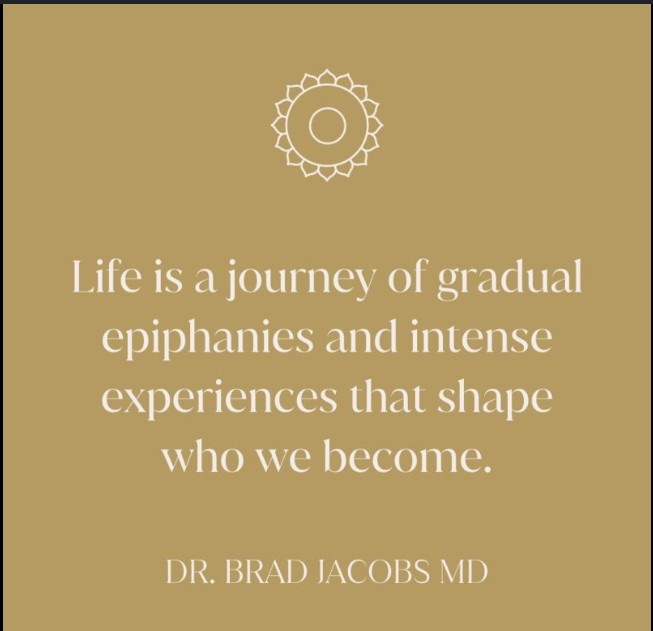

Life is a beautiful blend of experiences, passions, and dreams. Welcome to my Everything EnilbA’s web, where I delve into the delicate dance between pursuing personal passions and navigating a fulfilling professional career. Here, you’ll find reflections on my love for the ocean, the thrill of exploration, and the growth that comes from balancing these elements with my professional aspirations. Join me as I share stories of my adventures, career insights, and the lessons learned along the way. Together, we will explore how to embrace one’s wanderlust while crafting a career that resonates with our true selves. Let’s navigate this journey together!
